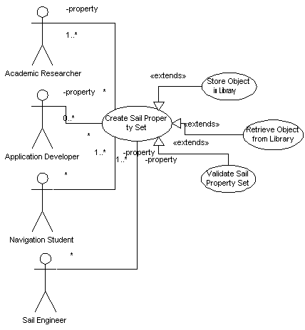

|
|
SailAway Project |
| Diagram |  |
|---|---|
| Name | Create Sail Property Set |
| Iteration | Finished |
| Summary | A user records into the system details about the external properties of a sail. These details will add up to enough information for the system to treat a related model as a rigid physical object that obeys rigid physics laws. Information that makes up a sail property set includes detail about the location of the center of mass, the total linear momentum, the focus of the Sail's orbit and other external properties. |
| Basic Course of Events |
|
| Alternative Paths |
If the system is configured for the use of a library at step 4, the sail
property set will saved in the library along with any information about a
related sail model.
If the system is configured for the use of a library in step 1, the sail property set associated with the current model stored in the library will be made avialable to the user as a starting point for possible refinement or use as is. Other property sets will be made available too, but they will be clearly marked as not yet being associated with the model. |
| Exception Paths | Invalid properties are brought to the attention of the user and not saved within a sail property set. |
| Extension Points |
When the System records properties for a sail property set, these properties
are passed through a validator.
When the System records a property set in a library, it will use a separate process to do the actual saving due to the complexity of the interaction between the System and a remote library and the fact that the separate process can be re-used by other sections of the system. When the System retrieves a property set from a library, it will use a separate process to do the actual getting due to the complexity of the interaction between the System and a remote library and the fact that the separate process can be re-used by other sections of the system.
|
| Trigger | The user triggers this case when they enter information into the System that results in a new or altered Sail Property Set. |
| Assumptions | . |
| Preconditions |
|
| Postconditions | Every time the System leaves this case, any stored sail property set is valid. It is not necessarily true that the property set is complete. |
| Related Environment Rules | . |
| Author | Dr Alfred W Differ |
| Date |
2001/12/26 - Facade 2002/01/04 - Filled 2002/02/04 - Focused 2002/02/15 - Finished |